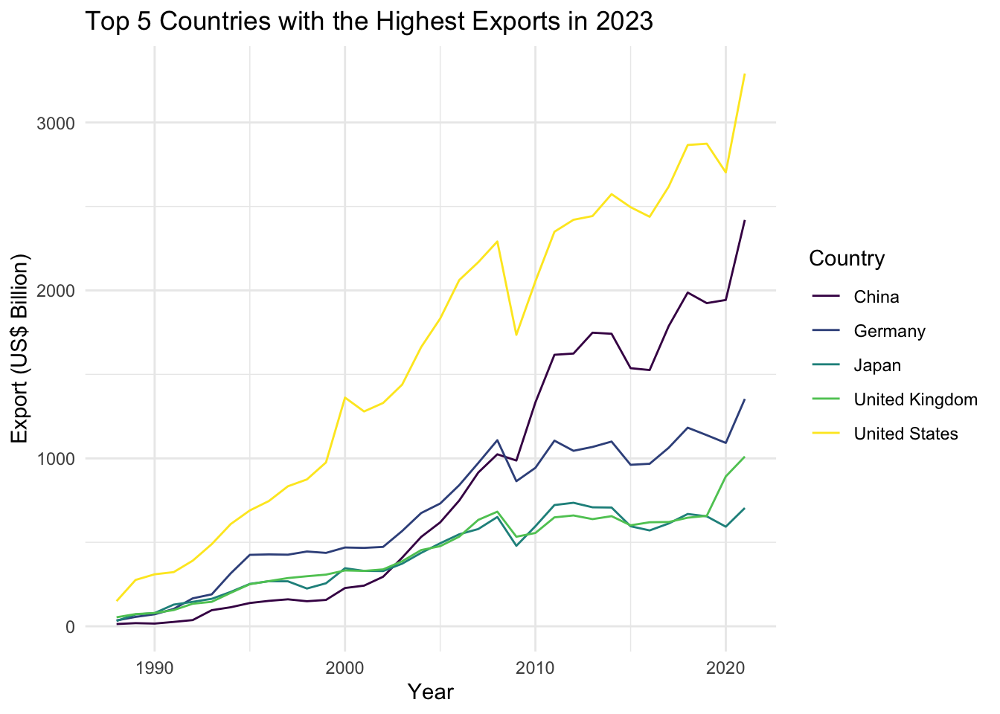
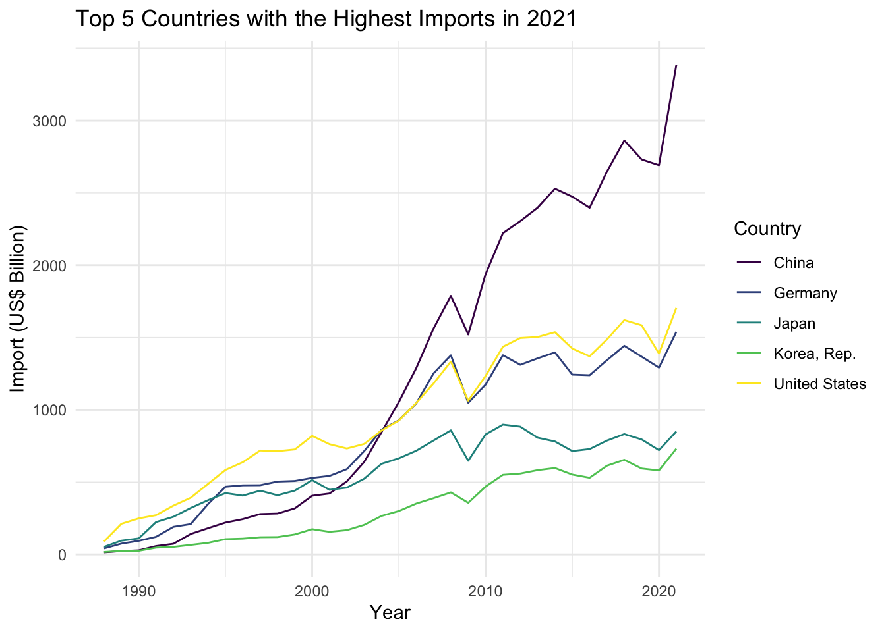
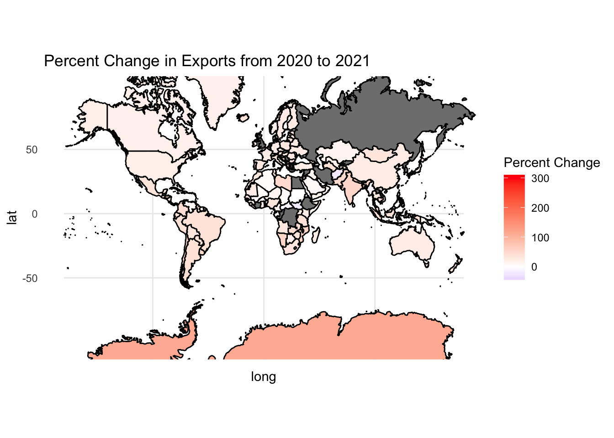
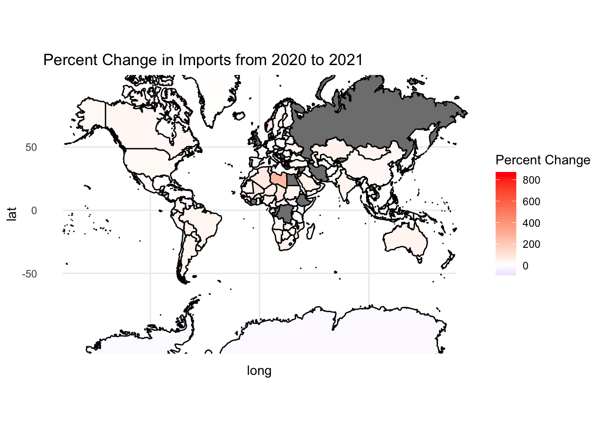

Parter Name - The country or trading partner that the data is from
Year - The year of the data
Export (US$ Thousand) - total value of goods and products exported by the country in thousands of US dollars
Import (US$ Thousand) - total value of goods and products imported by the country in thousands of US dollars
It is important to note that all values of exports and imports are expressed in thousands of US dollars.
I will be using this data to create some visualizations and to analyze the data. I am interested in exploring how exports and imports have changed over time and will look at countries with the highest exports and imports in 2021 and compare them over time. I will also create a world map that shows the percent change in exports from 2020 to 2021 for all countries in the data set.
# A tibble: 5 × 3
Partner_Name Year Export_Thousand
<fct> <dbl> <dbl>
1 United States 2021 3291674759.
2 China 2021 2419607092.
3 Germany 2021 1353626273.
4 United Kingdom 2021 1010705115.
5 Japan 2021 704318189.
# create vector of top 5 countriestop_5_exp_2023_vec <- top_5_exp_2023$Partner_Name# filter data set to only include top 5 countries# also convert export values to billionstop_5_exp_df <- world_imp_exp |>filter(Partner_Name %in% top_5_exp_2023_vec) |>mutate(Export_Billion = Export_Thousand /1000000) |>select(Partner_Name, Year, Export_Billion)
Create a plot to visualize the top 5 countries with the highest exports in 2021 have changed over time (since 1989).
ggplot(data = top_5_exp_df, aes(x = Year, y = Export_Billion, color = Partner_Name)) +geom_line() +labs(title ="Top 5 Countries with the Highest Exports in 2023",x ="Year",y ="Export (US$ Billion)",color ="Country") +scale_color_viridis_d() +theme_minimal()

The plot above shows the top 5 countries with the highest exports in 2021 and how they have changed over time. The United States has the highest exports in 2021, followed by China, Germany, The United Kingdom and Japan. The United States has had the highest exports over time. All countries have increased in exports from 1989 to 2021.
Filter the data set to find the top 5 countries with the highest imports in 2023, and compare how they have changed over time.
# A tibble: 5 × 3
Partner_Name Year Import_Thousand
<fct> <dbl> <dbl>
1 China 2021 3383435785.
2 United States 2021 1703893335.
3 Germany 2021 1538830199.
4 Japan 2021 850187994.
5 Korea, Rep. 2021 731208978.
# create vector of top 5 countriestop_5_imp_2023_vec <- top_5_imp_2023$Partner_Name# filter data set to only include top 5 countries# also convert export values to billionstop_5_imp_df <- world_imp_exp |>filter(Partner_Name %in% top_5_imp_2023_vec) |>mutate(Import_Billion = Import_Thousand /1000000) |>select(Partner_Name, Year, Import_Billion)
Create a plot to visualize the top 5 countries with the highest imports in 2021 have changed over time (since 1989).
ggplot(data = top_5_imp_df, aes(x = Year, y = Import_Billion, color = Partner_Name)) +geom_line() +labs(title ="Top 5 Countries with the Highest Imports in 2021",x ="Year",y ="Import (US$ Billion)",color ="Country") +scale_color_viridis_d() +theme_minimal()

The plot above shows the top 5 countries with the highest imports in 2021 and how they have changed over time. The China has the highest imports in 2021, followed by the United States and Germany which are very close together. All countries have seen an increase in imports from 1989 to 2021.
Load in world data to create a world map.
# load in data for world mapworld_df <-map_data("world")# change USA in region to United Statesworld_df <- world_df |>mutate(region =ifelse(region =="USA", "United States", region))
Create a world map that shows the percent change in exports from 2020 to 2021 for all countries in the data set.
# create df that has percent change in exports from 2020 to 2021 for all countriesperc_change_exp <- world_imp_exp |>filter(Year ==2020| Year ==2021) |>group_by(Partner_Name) |>summarise(perc_change = ((last(Export_Thousand) -first(Export_Thousand)) /first(Export_Thousand)) *100) |>mutate(perc_change =round(perc_change, 2))# create plot df that combines world_df with perc_change_expfull_df_exp <-left_join(world_df, perc_change_exp, by =c("region"="Partner_Name"))# create world mapggplot(data = full_df_exp, aes(x = long, y = lat, group = group)) +geom_polygon(aes(fill = perc_change), color ="black") +coord_map(projection ="mercator", xlim =c(-180, 180)) +scale_fill_gradient2(low ="blue", mid ="white", high ="red", midpoint =0) +labs(title ="Percent Change in Exports from 2020 to 2021",fill ="Percent Change") +theme_minimal()

Countries in gray are not included in the data set. The map shows that most countries have seen a small increase in exports from 2020 to 2021. If I were to have more time, I would like to modify the percent change scale or limit the countries I am looking at to improve the ability to compare different countries, rather than just observing an overall increase across most countries.
Create a world map that shows the percent change in imports from 2020 to 2021 for all countries in the data set.
# create df that has percent change in imports from 2020 to 2021 for all countriesperc_change_imp <- world_imp_exp |>filter(Year ==2020| Year ==2021) |>group_by(Partner_Name) |>summarise(perc_change = ((last(Import_Thousand) -first(Import_Thousand)) /first(Import_Thousand)) *100) |>mutate(perc_change =round(perc_change, 2))# create plot df that combines world_df with perc_change_impfull_df_imp <-left_join(world_df, perc_change_imp, by =c("region"="Partner_Name"))# create world mapggplot(data = full_df_imp, aes(x = long, y = lat, group = group)) +geom_polygon(aes(fill = perc_change), color ="black") +coord_map(projection ="mercator", xlim =c(-180, 180)) +scale_fill_gradient2(low ="blue", mid ="white", high ="red", midpoint =0) +labs(title ="Percent Change in Imports from 2020 to 2021",fill ="Percent Change") +theme_minimal()

Countries in gray are not included in the data set. The map shows that most countries have seen a slight increase in imports from 2020 to 2021. If I were to have more time, I would like to modify the percent change scale or limit the countries I am looking at to improve the ability to compare different countries, rather than just observing an overall increase across most countries, in the same fashion as the map above.
Conclusion and Wrap-Up
In conclusion, the data set I used to analyze the trade of goods between countries from 1989 to 2021 was very interesting. I was able to find the top 5 countries with the highest exports and imports in 2021 and compare how they have changed over time. I was also able to create world maps that show the percent change in exports and imports from 2020 to 2021 for all countries in the data set.
If I were to have more time, I would like to modify the percent change scale or limit the countries I am looking at to improve the ability to compare different countries, rather than just observing an overall increase across most countries. I would also like to create world maps that shows the percent changes in exports and imports from 1989 to 2021 for all countries in the data set. This would allow me to see how the trade of goods between countries has changed over time.
Connections to Class Ideas
This project connects to many of the ideas we have learned in class. I used the mapping features we have learned in class to display the data in a way that is easy to understand. I also used the dplyr package to manipulate the data in a way that made it easier to analyze. I think these visualizations are effective ways of communicating information, but I know that my world maps can be improved upon.